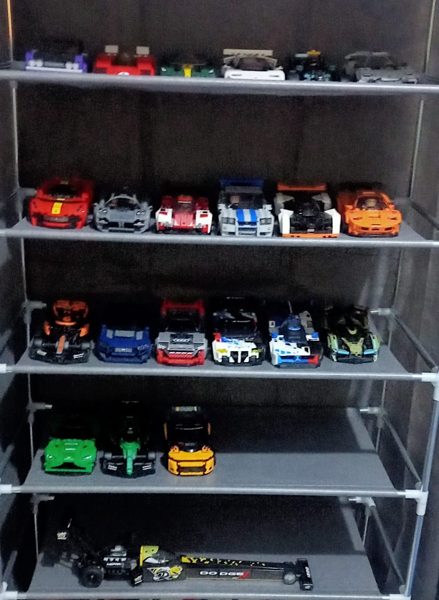

//ejercicio 1
Mis pasiones
3 de mis gustos preferidos: coleccionar Legos, los videojuegos y el deporte motor
Quiero darles la bienvenida a mi pagina, donde les hablare de 3 cosas que me apasionan mucho y que se han vuelto un pasatiempo
Estos gustos son los siguientes:
- coleccionar Legos Speed Champions

- Los videojuegos
- El automovilismo de resistencia